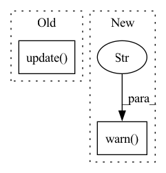

Pattern ID :743
Before Change
// for compatibility of the old API. return the dict positions
positions = report_dict.get("positions")
report_dict.update( {"positions": {k: p.position for k, p in positions.items()}})
return report_dict
def long_short_backtest(After Change
whether to print log.
warnings.warn("this function is deprecated, please use backtest function in qlib.contrib.backtest" , DeprecationWarning)
report_dict = backtest_func(pred=pred, account=account, shift=shift, benchmark=benchmark, verbose=verbose, return_order=False, **kwargs)
return report_dict.get("report_df"), report_dict.get("positions")
In pattern: SUPERPATTERN
Frequency: 4
Non-data size: 2
Instances Fragment ID: 3617230
Project Name: microsoft/qlib
Commit Name: 65d8af41e70b52b249683356b49dabc791387349
Time: 2021-01-18
Author: bxddream@gmail.com
File Name: qlib/contrib/evaluate.py
M Class Name: AnonimousClass
N Class Name: AnonimousClass
M Method Name: backtest(5)
N Method Name: backtest(6)
M Parent Class:
N Parent Class:
M File Name: qlib/contrib/evaluate.py
N File Name: qlib/contrib/evaluate.py
M Start Line: 242
M End Line: 346
N Start Line: 123
N End Line: 125
Before Change
self._steps = epoch * self._steps_per_epoch + step
self._set_epoch()
self._manager.update(
self._module,
self._optimizer,
self._epoch,
self._steps_per_epoch,
log_updates=False,
)
def _set_epoch(self):
epoch_num = self._steps // self._steps_per_epoch
epoch_steps = self._steps % self._steps_per_epochAfter Change
:param step: the step (batch) within the epoch to set the
current global step to match
warnings.warn(
"ScheduledOptimizer is deprecated and will be deleted in the future. "
"adjust_current_step is no longer supported. "
"Please replace with manager.initialize and manager.modify" ,
UserWarning,
)
Fragment ID: 3617229
Project Name: neuralmagic/sparseml
Commit Name: 35be148dfed1e7ea46e5fbc4e12972d7ccce121a
Time: 2021-05-12
Author: mark@neuralmagic.com
File Name: src/sparseml/pytorch/optim/optimizer.py
M Class Name: ScheduledOptimizer
N Class Name: ScheduledOptimizer
M Method Name: adjust_current_step(3)
N Method Name: adjust_current_step(3)
M Parent Class: Optimizer
N Parent Class: Optimizer
M File Name: src/sparseml/pytorch/optim/optimizer.py
N File Name: src/sparseml/pytorch/optim/optimizer.py
M Start Line: 224
M End Line: 232
N Start Line: 183
N End Line: 188
Before Change
cls, kwargs = get_cls_kwargs(task["dataset"], default_module="qlib.data.dataset")
if issubclass(cls, TSDatasetH):
hist_ref = kwargs.get("step_len", TSDatasetH.DEFAULT_STEP_LEN)
PredUpdater(rec, to_date=to_date, hist_ref=hist_ref).update()
self.logger.info(f"Finished updating {len(online_models)} online model predictions of {exp_name}.")
After Change
updater = PredUpdater(rec, to_date=to_date, hist_ref=hist_ref)
except OSError:
// skip the recorder without pred
self.logger.warn(f"Can"t find `pred.pkl`, skip it." )
continue
updater.update()
self.logger.info(f"Finished updating {len(online_models)} online model predictions of {exp_name}.") Fragment ID: 3617228
Project Name: microsoft/qlib
Commit Name: a7862387a2982abd07a2f10a938af7cb5f349512
Time: 2021-06-29
Author: lzh222333@163.com
File Name: qlib/workflow/online/utils.py
M Class Name: OnlineToolR
N Class Name: OnlineToolR
M Method Name: update_online_pred(3)
N Method Name: update_online_pred(3)
M Parent Class: OnlineTool
N Parent Class: OnlineTool
M File Name: qlib/workflow/online/utils.py
N File Name: qlib/workflow/online/utils.py
M Start Line: 185
M End Line: 192
N Start Line: 185
N End Line: 198
Before Change
elif is_torch_tpu_available():
if self.do_grad_scaling:
self.scaler.step(self.optimizer)
self.scaler.update()
elif self.do_grad_scaling:
scale_before = self.scaler.get_scale()
self.scaler.step(self.optimizer)
self.scaler.update()After Change
)
if args.bf16:
warnings.warn(
"ONNX Runtime doesn"t support BF16 when executing `Aten` operators. The execution will fail if"
"there are any `Aten` op in the IR. Support for this in ONNX Runtime is currently in progress, stay tuned!" ,
RuntimeWarning,
)
self.model = model
deepspeed_engine, optimizer, lr_scheduler = deepspeed_init(
self, num_training_steps=max_steps, resume_from_checkpoint=resume_from_checkpoint Fragment ID: 3617227
Project Name: huggingface/optimum
Commit Name: 021ae43f0d043751df9b567eaa14cb705242d570
Time: 2022-05-24
Author: 44135271+JingyaHuang@users.noreply.github.com
File Name: optimum/onnxruntime/trainer.py
M Class Name: ORTTrainer
N Class Name: ORTTrainer
M Method Name: train(4)
N Method Name: train(4)
M Parent Class: Trainer
N Parent Class: Trainer
M File Name: optimum/onnxruntime/trainer.py
N File Name: optimum/onnxruntime/trainer.py
M Start Line: 306
M End Line: 506
N Start Line: 187
N End Line: 526